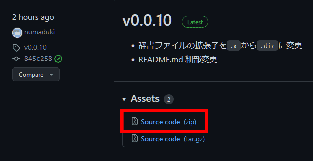

- 辞書ファイルの拡張子を
.cから.dicに変更 - README.md 細部変更
ソフトウェアのバージョン管理を、このバージョンよりGitHubに移行しました。
またGitHubではバージョン番号は普通につけるのが推奨されているようなので、普通の付け方に変更しました。
リリース一覧のページで、変更点の確認が可能です。
ダウンロードするには、「Latest」と書いてあるバージョンのAssetsの中の「Source code (zip)」というリンクをクリックしてください。

なお恥ずかしながら、GitHubはあまり使ったことがなく、ヤバいくらい見切り発車です。
ソフトウェアの完成度よりも、むしろ私の完成度の方がアルファバージョン未満であり、初心者です。
よろしくお願いします。